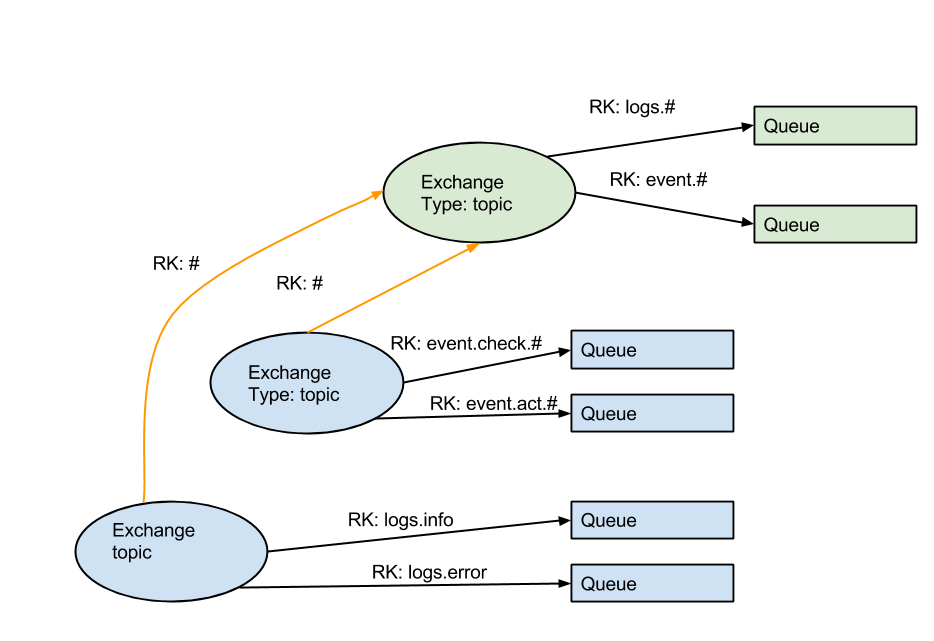

I'm a long time user of RabbitMQ for different type of tasks like chat system, worker queue, logging etc. But lately I was looking for an option to track all messages passing through set of exchanges without interfering those exchanges. The need for it's that I want to analyze the messages passing in those exchanges. For that case Exchange-to-Queue binding is not enough for me, Because on that case I have to create one queue for each exchange available on the server.I want to avoid this. Then I came across this interesting RabbitMQ extension feature ( It's not there in the AMQP standard yet) which allow you to bind Exchange-to-Exchange.
So using this exchange-to-exchange binding I can create a dummy exchange and bind it with those exchanges that I'm instead in. The routing keys used with the queue binding is applicable while binding the exchanges together. The messages are routed to the other binded exchanges by applying those routing keys. And obviously I created a dummy queue to persist those messages coming on the dummy exchange.
By this way my external monitoring and quality checking code only monitor the dummy queue for the messages and it consumes and discard it from the queue. By the way this setup is not for permanent use.
I'm using this method to do the following things.
- To create more complex routing topologies for your application.
- To do the integration testing of complex systems which has asynchronous work flows.
- We can use this for do some debugging operations of production system without affecting the live machine. We can bind and start tap the messages at any time from the live system. After use we can remove those bindings.
Here is the simple diagram showing the exchange-to-exchange binding. The orange lines showing the exchange-to-exchange binding.
Thank you.
Comments !